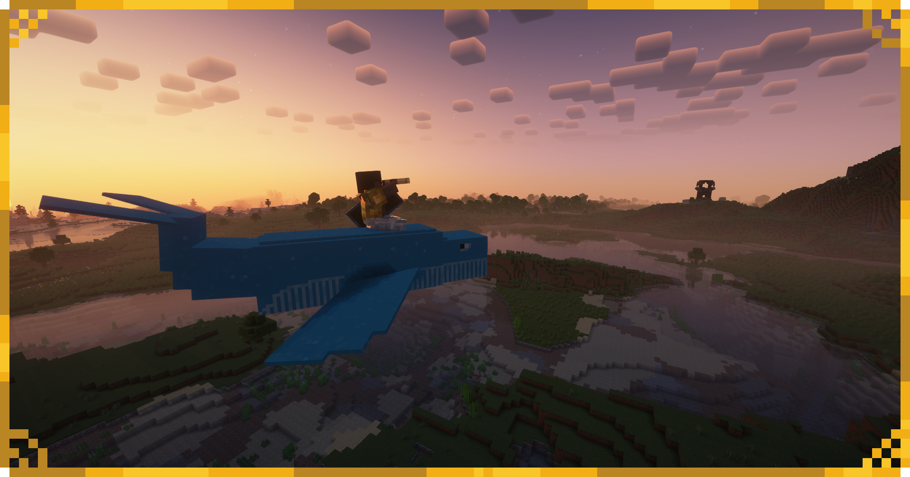

The Norhval
A majestic flying whale roaming the skies of the plains!

This Mod adds flying whales to the game!
Whalestrom is a Minecraft Mod for Fabric, which adds flying whales called "Norhval"!
These creatures can be tamed and ridden to explore the surroundings.
A majestic flying whale roaming the skies of the plains!
This exquisite Artifact can be dropped by the Norhval and it grants its user levitation!
-> Yes, the Fabric API is required!
-> No Forge Ports are planned at the moment!
-> Yes! This mod is far from finished and still in the Beta Phase!
-> If you find any, please report them in GitHub!